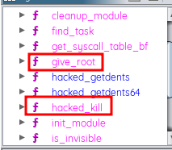
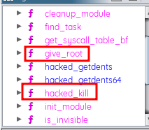

[Reversing Diamorphine.ko - Cyberpsychosis]
[by n1nja]
⣿⣿⣿⣿⣿⣿⣿⣿⣿⣿⣿⣿⣿⣿⣿⣿⣿⣿⣿⣿⣿⣿⣿⣿⣿⣿⣿⣿⣿⣿⣿⣿⣿⣿⣿⣿⣿⣿⣿⣿⣿⣿⣿⣿⣿⣿⣿⣿⣿⣿⣿⣿⣿⣿⣿⣿⣿⣿⣿⣿⣿⣿⣿⣿⣿
⣿⣿⣿⣿⣿⣿⣿⣿⠁⣶⣶⣶⣶⣶⣶⣖⡶⣶⣶⣶⣶⣶⣖⣶⣶⣶⣶⣶⡶⣶⣶⣶⣶⡦⣶⡶⣦⣴⣶⣶⣶⣶⣶⣶⣶⣶⣶⣖⣶⣴⢶⣶⣶⣶⡆⣿⣿⣿⣿⣿⣿⣿⣿⣿⣿
⣿⣿⣿⣿⣿⣿⣿⣿⠀⣿⣝⣿⣿⣿⣷⣿⡟⣿⣿⣿⣿⣭⣿⣿⣿⣿⣿⣿⣿⣿⣯⡻⣫⣏⢻⢯⣿⣿⣯⣿⣿⣻⣿⣿⣿⡿⣾⣿⣿⣿⣿⣿⣻⢿⡇⣟⣿⣿⣿⣿⣿⣿⣿⣿⣿
⣿⣿⣿⣿⣿⣿⣿⣿⠀⣿⣿⣿⣷⣻⣿⣯⣱⢻⣿⣿⣿⣿⣿⣿⣿⡿⡿⣿⣿⣟⣋⣒⣈⣛⣂⣛⣻⣿⣿⣟⣿⣿⣿⣿⣽⣧⣍⡽⣟⣿⣿⣿⣿⢿⡇⣿⣿⣿⣿⣿⣿⣿⣿⣿⣿
⣿⣿⣿⣿⣿⣿⣿⣿⠀⣿⣿⣿⣷⣦⡲⢦⣶⣆⣖⣢⣾⣼⣿⣿⣿⣯⣿⣿⣿⠷⢟⡻⢟⢿⢿⣿⣿⣿⣿⣿⠿⣿⣿⣯⣿⣾⣾⣿⣿⣿⣿⣿⣿⣫⡇⣿⣿⣿⣿⣿⣿⣿⣿⣿⣿
⣿⣿⣿⣿⣿⣿⣿⣿⡀⣿⣿⣿⣿⣿⡟⡷⣩⡱⡼⡿⣽⣿⣿⣽⣗⣿⣿⡿⠃⠐⠂⡬⢢⢆⠖⠘⡟⡇⢇⢡⠀⠈⠀⡹⢾⣿⣻⣿⣿⡟⡿⣿⣺⣝⡇⣿⣿⣿⣿⣿⣿⣿⣿⣿⣿
⣿⣿⣿⣿⣿⣿⣿⣿⡇⡿⢽⢾⣿⣿⡵⣾⣿⣿⣶⣽⡿⣿⣻⡿⠉⢻⣿⡏⠉⣨⠍⢧⠶⠗⡲⡀⠃⡑⠘⢄⣂⣐⣰⡁⠔⢻⣿⣟⣿⣿⣹⣻⣿⢿⡇⢻⣿⣿⣿⣿⣿⣿⣿⣿⣿
⣿⣿⣿⣿⣿⣿⣿⣿⡇⡿⡿⣝⢿⣿⣿⡿⣯⣯⢿⣟⣿⣿⠟⠃⢸⣆⣿⣿⡁⣀⠔⠋⠀⢝⢀⠨⠀⣠⣶⡿⠟⢻⣿⢷⣀⣉⣿⣟⣧⣧⣶⢦⣾⣿⡇⢲⣿⣿⣿⣿⣿⣿⣿⣿⣿
⣿⣿⣿⣿⣿⣿⣿⣿⠃⣿⣿⡯⣷⣿⣷⣿⣿⣿⣽⡿⠋⠀⢀⡀⢸⣿⣿⣿⣿⠃⠁⠠⠐⠊⡀⠈⢹⠁⠉⣠⣴⣿⣿⣾⢒⢲⣿⣯⣽⣴⣧⣿⣿⣽⡇⣼⣿⣿⣿⣿⣿⣿⣿⣿⣿
⣿⣿⣿⣿⣿⣿⣿⣿⠀⣿⣾⡿⣿⣿⣽⣿⣿⣿⠋⢀⠊⠀⠁⡇⠈⣿⣿⣿⣾⡷⢆⡒⢄⢐⠎⠀⣄⣠⣾⣿⣿⣿⡿⠏⣢⣿⡿⢿⣿⣽⣾⣿⣿⣿⡇⣿⣿⣿⣿⣿⣿⣿⣿⣿⣿
⣿⣿⣿⣿⣿⣿⣿⣿⠀⣷⣿⣿⣿⣿⣿⣾⣿⠃⡠⠁⠀⡈⠀⢹⡀⠘⣿⣿⣿⣷⣒⣁⠌⠀⠀⡀⢾⣿⣝⣛⣛⣝⣴⣾⣿⡏⣶⡀⠻⣾⣿⣿⣿⣿⡇⣿⣿⣿⣿⣿⣿⣿⣿⣿⣿
⣿⣿⣿⣿⣿⣿⣿⣿⠀⣷⣿⣏⣿⣿⣛⣿⠃⡐⠀⠀⢀⠁⠀⠀⠵⣄⣼⡿⠿⡟⣆⡀⠄⣠⣾⢓⠁⠿⣿⣿⣿⣿⣿⣳⣽⠿⢛⣀⠀⠈⠙⢿⣿⣿⡇⣿⣿⣿⣿⣿⣿⣿⣿⣿⣿
⣿⣿⣿⣿⣿⣿⣿⣿⠀⣿⣿⣿⣿⣿⣿⠇⠰⠀⠀⠀⠸⡀⣠⡶⣟⠡⣂⠄⠀⠁⣙⣂⢦⠣⠅⢠⠀⠀⠋⠚⢻⠻⣿⣏⣠⠴⠋⠀⢳⠀⠄⠄⢻⣿⡇⣿⣿⣿⣿⣿⣿⣿⣿⣿⣿
⣿⣿⣿⣿⣿⣿⣿⣿⠀⣯⣿⣿⣿⣿⣿⢀⠃⠀⠀⡀⡆⠐⡷⢼⠁⠑⠒⡯⢧⢠⣭⣿⣵⠡⠐⠂⠀⠈⠈⠈⠐⠁⠊⠛⢷⣄⠀⠀⠀⠁⠐⠈⡄⢹⡇⣿⣿⣿⣿⣿⣿⣿⣿⣿⣿
⣿⣿⣿⣿⣿⣿⣿⣿⠀⣾⣿⣿⣿⣿⡇⡘⠀⠀⠝⠀⣇⣶⠑⠂⠀⠄⣀⠡⠷⣿⠬⢞⠉⠉⢘⣥⡀⢀⠀⠀⠀⠀⢠⡤⡀⢻⡆⠀⠀⠂⠀⠀⢰⠀⢿⣿⣿⣿⣿⣿⣿⣿⣿⣿⣿
⣿⣿⣿⣿⣿⣿⣿⣿⠃⣯⣿⣿⣿⣿⠀⠇⠀⠀⠀⢀⡟⡙⡄⡐⠊⣡⠢⣊⠴⠁⠀⠠⠉⢢⣀⣙⣷⠻⣂⡔⠀⢀⠃⢠⠁⢸⡇⠀⠀⢴⠂⠐⠈⡀⢸⣿⣿⣿⣿⣿⣿⣿⣿⣿⣿
⣿⣿⣿⣿⣿⣿⣿⣿⠀⣯⡿⣿⣿⣿⢸⠀⠀⠀⠀⡾⢴⠛⠻⡮⣴⢿⠩⠁⠀⠤⠀⠈⢀⣐⣿⢏⡟⠕⠗⠓⠊⠁⢴⠃⠀⣸⡇⠀⠀⠀⡄⠀⠄⡇⠸⣿⣿⣿⣿⣿⣿⣿⣿⣿⣿
⣿⣿⣿⣿⣿⣿⣿⣿⠀⣽⣾⣿⣿⡇⢸⠀⠀⠀⣸⠃⠈⠠⠀⠙⠀⡨⠜⣣⠖⢙⠒⠒⠒⢙⠏⠀⠀⠀⠀⠀⢀⣼⡧⡀⢸⣿⠤⡄⢀⠁⡇⠉⠂⠧⠀⣿⣿⣿⣿⣿⣿⣿⣿⣿⣿
⣿⣿⣿⣿⣿⣿⣿⣿⠀⣿⣿⣿⣿⡇⠘⠁⠀⠱⡏⠀⠀⣀⣴⡬⣗⠻⣚⠕⠀⠸⣒⠠⡀⠰⠀⢠⠀⠀⢀⣴⡿⠻⠛⠕⡮⢀⣱⠇⠀⠀⡇⠀⠀⡀⢠⣿⣿⣿⣿⣿⣿⣿⣿⣿⣿
⣿⣿⣿⣿⣿⣿⣿⣿⡇⣿⣷⣿⣿⡇⠀⠀⠀⠀⠻⢥⠼⠗⠚⢻⡇⢀⣶⢭⣀⠒⠊⠀⠈⠢⢀⠘⠄⠀⡘⠈⠁⠁⠀⡤⢺⡟⠀⠀⠀⠀⡇⠀⠀⡇⢸⣿⣿⣿⣿⣿⣿⣿⣿⣿⣿
⣿⣿⣿⣿⣿⣿⣿⣿⠇⣿⣿⣽⣿⡇⢸⠀⠀⠀⠀⠀⠀⠀⠀⢸⣧⠟⠓⢀⡬⠀⠀⠀⠀⡀⢩⣻⡛⠀⠱⣂⣀⡤⣾⠃⣺⣅⣀⠀⠀⠀⡇⠀⠀⠃⢸⣿⣿⣿⣿⣿⣿⣿⣿⣿⣿
⣿⣿⣿⣿⣿⣿⣿⣿⠀⣿⡿⡽⣿⣧⢸⠀⠀⣴⠞⠫⡭⠝⣷⢾⠟⢧⣐⠁⠲⣂⡤⠤⡽⣳⣶⣤⣷⡔⠀⣏⢑⠓⠃⢒⡟⢤⢈⢷⡀⠀⠃⠀⢸⠀⣿⣫⣿⣿⣿⣿⣿⣿⣿⣿⣿
⣿⣿⣿⣿⣿⣿⣿⣿⡆⣿⡿⣮⣿⣿⠈⡄⢾⠧⣦⣦⡏⠑⢯⡳⣧⡀⠈⢉⠛⠒⠾⠾⠓⠛⠉⠉⠙⡼⡄⠻⣦⣤⣤⣞⢅⡢⣨⠈⣧⠀⠀⠀⡆⢰⡏⢯⣿⣿⣿⣿⣿⣿⣿⣿⣿
⣿⣿⣿⣿⣿⣿⣿⣿⡆⣟⣲⣿⣿⣿⡀⠁⢸⣰⢄⣃⢟⢝⡻⣿⢼⢷⣣⠄⡐⢀⠀⠒⠃⠀⠀⢤⠍⡜⣌⠀⠈⠑⠅⡨⠐⣊⠸⠲⢟⢹⠃⢰⠁⣼⡇⣀⣿⣿⣿⣿⣿⣿⣿⣿⣿
⣿⣿⣿⣿⣿⣿⣿⣿⡇⣿⣿⣿⣾⣷⡇⣤⠘⣧⣙⣓⠮⢸⠆⡏⢛⠻⣿⣷⣷⣘⡆⢀⡠⣔⣬⣼⣾⣧⠟⣳⠦⠤⠜⢏⠒⠢⡀⠀⣫⣾⠀⠇⢰⣿⡇⣿⣿⣿⣿⣿⣿⣿⣿⣿⣿
⣿⣿⣿⣿⣿⣿⣿⣿⡇⣿⣿⣿⣿⡞⣿⠻⠶⢮⣿⣯⣙⠇⢄⠀⠀⠙⠸⣶⠻⡽⣻⣷⣿⡻⣽⡳⡿⠁⠬⠣⠁⠀⡠⣸⠀⠀⠠⠈⣼⠃⡘⠀⣾⣿⡇⣿⣿⣿⣿⣿⣿⣿⣿⣿⣿
⣿⣿⣿⣿⣿⣿⣿⣿⠁⣿⣿⣿⣻⣿⢄⠠⢈⡒⠚⣹⡿⣶⣔⣎⠀⠀⢠⢹⣿⣧⡇⣯⣇⡇⣷⣷⢁⠊⠀⡈⢂⣔⣜⠿⠩⢲⣆⣀⣿⠀⠁⣰⣿⢿⡇⢿⣿⣿⣿⣿⣿⣿⣿⣿⣿
⣿⣿⣿⣿⣿⣿⣿⣿⠀⣷⣭⣿⣿⠰⡀⠑⠁⠠⣶⡋⣠⠿⠟⣦⣪⡠⡀⠀⣯⡳⡷⣧⣓⡪⣫⠏⠃⢀⣵⡔⢷⡝⡠⡩⠄⠂⠠⢾⣧⠀⢀⣿⣿⣿⡇⣸⣿⣿⣿⣿⣿⣿⣿⣿⣿
⣿⣿⣿⣿⣿⣿⢿⡿⡂⣿⡿⢿⣿⠅⢀⣰⡤⣶⠿⢿⢏⠘⣶⣿⣻⣮⣢⡒⣽⣟⢾⣹⣯⣾⣋⡢⢂⣮⣴⣾⡿⢏⠲⡑⢂⠄⠀⠀⣿⡄⣼⣿⣿⣿⡇⣿⣿⣿⣿⣿⣿⣿⣿⣿⣿
⣿⣿⣿⣿⣿⣿⢻⠈⠳⣷⣿⣿⡿⠍⠉⠁⡁⡩⡑⢈⡾⢰⣾⣿⣿⣿⣿⣷⣦⡟⣳⣟⢝⢝⠑⣴⣿⣻⣿⠋⡄⡇⣳⠿⠚⢀⠘⣕⠀⣿⣿⣿⣿⣿⡇⣿⣿⣿⣿⣿⣿⣿⣿⣿⣿
⣿⣿⣿⣿⣿⣿⣧⡑⡄⠈⣿⣿⡏⠂⠃⠀⠐⢍⢪⣪⡢⡃⢻⣿⣿⡿⠿⠿⢟⠪⢲⡟⡯⡢⡱⠻⡿⣿⠇⣰⠟⠫⢒⣑⣠⣀⣀⠆⡀⢈⢿⣿⣿⣿⡇⣾⣿⣿⣿⣿⣿⣿⣿⣿⣿
⣿⣿⣿⣿⣿⣿⣿⡗⡇⠀⢸⣿⡃⠇⠀⠐⣦⢬⣄⣚⠛⠴⢼⣿⣇⡫⡿⢵⣶⠻⣸⣿⣿⢋⣷⢹⠯⣼⣶⠋⢀⣴⣿⡀⠒⠠⢂⡀⡂⢕⡫⣻⣯⣿⡅⢹⣿⣿⣿⣿⣿⣿⣿⣿⣿
⣿⣿⣿⣿⣿⣿⣿⢣⠁⢀⣿⡟⠄⢸⠀⣜⠀⢈⡠⣰⣶⣤⣔⢝⠿⡄⢳⣸⣟⣼⠿⡻⣿⣼⣿⣾⣱⠏⣚⣫⣿⣿⣿⣷⡂⠄⠀⠀⡠⡀⡀⠀⡻⣿⣃⣘⣛⡻⣿⣿⣿⣿⣿⣿⣿
⣿⣿⣿⣿⣿⣿⣏⠇⠀⣾⣿⠨⠀⠀⠑⠒⣌⠁⠀⣿⣯⣿⣿⣽⣷⣞⡱⢎⡻⢗⣺⢸⡚⡿⠯⠶⣓⣾⣿⣿⣿⣿⣿⣿⣿⠢⡀⠀⠘⠁⢀⠄⠀⠀⠀⣉⠉⠈⣢⢻⣿⣿⣿⣿⣿
⣿⣿⣿⣿⣿⣿⢸⡆⢸⣿⡏⠀⠀⠀⢀⠘⠃⠀⡜⣿⣿⣾⣿⣿⣽⣿⣿⣿⡏⢱⣦⣥⣷⠀⣿⣿⢸⣷⣿⣿⣿⡿⣿⣟⣾⣯⡀⠀⢀⡠⡂⠀⢀⣴⡏⠀⢉⠀⢨⢸⣿⣿⣿⣿⣿
⣿⣿⣿⣿⣿⣿⢸⠇⠸⣿⣗⠀⡠⠈⠚⠛⠊⢴⠂⣿⣿⣿⣿⣿⣿⣿⣿⣿⣷⣌⠛⠛⢋⣴⣿⣿⢸⣼⣽⣿⣷⣽⣿⢿⣿⣟⣇⢸⡉⠚⠦⣀⣼⣯⡇⠤⠊⢀⢜⣾⣿⣿⣿⣿⣿
⣿⣿⣿⣿⣿⣿⣧⡫⣠⢈⠁⠈⠁⠀⠀⠀⠃⠘⡼⣿⣿⢿⣿⣟⣿⣿⣿⣷⣿⣷⡿⣿⣿⡿⢻⣿⣿⣷⣾⣯⣿⢿⣷⣽⠛⠏⣈⣦⢩⢖⡦⣤⣀⣀⣀⠤⢔⣩⣾⣿⣿⣿⣿⣿⣿
⣿⣿⣿⣿⣿⣿⣿⣿⠆⣿⣶⡂⠀⣀⣀⣠⣴⣬⣬⣾⣛⣿⣿⣿⣷⣿⣿⣿⣿⣾⣿⣿⣿⣟⣟⣿⢽⣽⣟⣵⢾⣿⣾⣿⣳⣎⠉⠉⠑⠊⣑⣼⣿⣿⡃⣟⣿⣿⣿⣿⣿⣿⣿⣿⣿
⣿⣿⣿⣿⣿⣿⣿⣿⠀⣿⣿⣿⣶⣦⣬⣅⣪⣷⣿⣿⣿⣿⣿⣿⣿⣿⣿⣿⡿⠿⠿⠷⢟⣿⣷⣾⢪⣿⣟⣯⠿⠿⠿⠿⠯⠭⣭⣭⡭⠭⢭⣌⣥⣭⡇⣿⣿⣿⣿⣿⣿⣿⣿⣿⣿
⣿⣿⣿⣿⣿⣿⣿⣿⠀⣿⣿⣿⣿⣭⣭⣭⣭⣽⣿⣻⡿⠿⠿⠿⠟⠿⠭⠽⠿⣭⡭⠭⠿⠭⢭⡭⡬⣭⡯⣿⣿⢿⣻⢻⣿⣛⣟⣻⣛⣟⡿⣿⣿⣿⡇⣷⣿⣿⣿⣿⣿⣿⣿⣿⣿
⣿⣿⣿⣿⣿⣿⣿⣿⠀⣶⣶⣶⣶⣶⣶⣿⣿⣿⢽⢿⣿⣻⣿⣿⡿⣿⣿⣩⣭⣍⣭⣭⣽⣟⣿⣿⣿⣿⣷⣿⢭⣽⣿⣿⣯⢿⣽⡿⣿⣽⣿⣿⣿⢿⡇⢿⣿⣿⣿⣿⣿⣿⣿⣿⣿
⣿⣿⣿⣿⣿⣿⣿⣿⠀⣿⠉⠉⠉⠉⠍⡉⠉⠉⠉⠉⠉⠉⠉⠉⠉⠉⠉⠉⠉⠉⠉⠙⠉⠍⠉⠉⠉⠉⠉⠉⠉⠉⠉⠉⠉⠉⠉⠉⠉⠉⠉⠉⠉⢹⡇⣸⣿⣿⣿⣿⣿⣿⣿⣿⣿
⣿⣿⣿⣿⣿⣿⣿⣿⠀⣿⠀⠀⠀⣠⡄⠀⢹⣉⠷⢸⡁⢹⠀⡟⢦⡏⢸⡧⣎⠀⠀⠀⠀⣿⣹⠆⢠⢻⡆⠈⢧⡰⣧⡜⠐⠯⣅⠀⠀⢤⡄⠀⠀⢸⡇⢾⣿⣿⣿⣿⣿⣿⣿⣿⣿
⣿⣿⣿⣿⣿⣿⣿⣿⠀⣿⠀⠀⠀⠀⠀⠀⠘⠂⠀⠈⠓⢎⠀⠓⠈⠃⠐⠓⠘⠒⠀⠀⠀⠛⠀⠀⠒⠀⠛⠂⠘⢁⠘⠁⠈⠒⠚⠀⠀⠀⠀⠀⠀⢸⡇⢿⣿⣿⣿⣿⣿⣿⣿⣿⣿
⣿⣿⣿⣿⣿⣿⣿⣿⣇⠿⠶⠶⠶⠶⠶⠶⠶⠶⢶⠶⠶⠶⠾⠷⠶⠶⠶⠶⠶⠾⠶⠶⠶⠶⠶⠶⠶⠶⠶⠷⠶⠶⠾⢶⠶⠾⠶⠶⠶⠶⠶⠶⠶⠾⢇⣿⣿⣿⣿⣿⣿⣿⣿⣿⣿
⣿⣿⣿⣿⣿⣿⣿⣿⣿⣿⣿⣿⣿⣿⣿⣿⣿⣿⣿⣿⣿⣿⣿⣿⣿⣾⣿⣷⣾⣿⣿⣿⣷⣾⣿⣿⣾⣾⣿⣷⣶⣶⣿⣿⣿⣿⣿⣿⣿⣿⣿⣿⣿⣿⣿⣿⣿⣿⣿⣿⣿⣿⣿⣿⣿
[1] Introdução
Olá, eu sou o n1nja.
Talvez você já me conheça pelas ruas escuras da comunidade Digital h3ll :)
Bem, hoje vou compartilhar com vocês um write-up do desafio Cyberpsychosis criado pelo MatheuZ Security. O link da room estará aqui.
[2] Reversando o diamorphine.ko
Após baixarmos o zip do diamorphine, temos então o diamorphine.ko. Uma explicação básica do que seria o .ko (Kernel Object) mas se trata de um arquivo (módulo) que pode ser carregado no kernel do linux.
O Diamorphine é um rootkit criado pelo m0nad. Ele possui algumas funções bastante interessantes e podemos acompanhá-las no repositório do GitHub do m0nad.
Abrindo o ghidra, vamos analisar o diamorphine.ko
 Vamos analisar as funções do diamorphine.

Perfeito, encontramos duas funções que podem nos fornecer o que nós precisamos para conseguir atingir o nosso objetivo.
Vamos analisar a função hacked_kill. Podemos notar nela algumas informações muito interessantes.
Convertendo esses dois hexadecimais, obtemos dois resultados que serão muito importantes para resolvermos o nosso desafio.
Agora vamos pegar o endereço do desafio e conectar no servidor pelo netcat.
Já dentro do servidor, vamos executar os comandos do diamorphine de uninstall. Observando os hexadecimais acima, podemos notar que eles serão os valores que devemos executar no comando kill.
Pow! Acertamos, agora temos um registro nos logs do kernel do diamorphine. Vamos então agora executar o próximo comando utilizando o valor 64.
Gg, conseguimos rootar! :) Não vou apresentar a flag justamente para não tirar a graça de vocês tentarem executar todo esse processo também!
Enfim, é isso. Até a próxima!
~ N1nja left.
Vamos analisar as funções do diamorphine.

Perfeito, encontramos duas funções que podem nos fornecer o que nós precisamos para conseguir atingir o nosso objetivo.
Vamos analisar a função hacked_kill. Podemos notar nela algumas informações muito interessantes.
Convertendo esses dois hexadecimais, obtemos dois resultados que serão muito importantes para resolvermos o nosso desafio.
Agora vamos pegar o endereço do desafio e conectar no servidor pelo netcat.
Já dentro do servidor, vamos executar os comandos do diamorphine de uninstall. Observando os hexadecimais acima, podemos notar que eles serão os valores que devemos executar no comando kill.
Pow! Acertamos, agora temos um registro nos logs do kernel do diamorphine. Vamos então agora executar o próximo comando utilizando o valor 64.
Gg, conseguimos rootar! :) Não vou apresentar a flag justamente para não tirar a graça de vocês tentarem executar todo esse processo também!
Enfim, é isso. Até a próxima!
~ N1nja left.